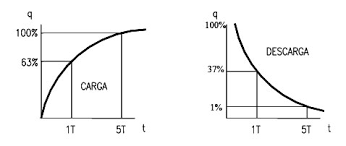

El condensador es un operador que consiste en dos láminas metálicas enfrentadas. Una se conecta al terminal positivo de la fuente de alimentación, y otra al terminal negativo.
El condensador es un operador que consiste en dos láminas metálicas enfrentadas. Una se conecta al terminal positivo de la fuente de alimentación, y otra al terminal negativo.
En corriente continua, el condensador actúa como un almacén de electrones: los electrones se van almacenando en las placas, hasta que éstas se llenan. Mientras las placas se van llenando, la corriente que está proporcionando la pila va disminuyendo, hasta hacerse cero cuando el condensador está repleto.
La capacidad de un condensador se mide en faradios (F), que son una unidad muy grande, por lo que se utilizan algunos submúltiplos, como el milifaradio, el microfaradio, el nanofaradio o el picofaradio.
Los condensadores pueden ser cerámicos o electrolíticos, teniendo que tener cuidado con estos últimos, ya que están polarizados (es decir, su positivo tiene que conectarse con el positivo de la alimentación, y el negativo a masa).
Los condensadores tienen como aplicación típica la temporización: circuitos que realizan una operación durante un tiempo o circuitos que, pasado un tiempo, comienzan a realizar una acción.
Todo ello está basado en un principio físico descrito por las siguientes curvas de carga y descarga de un condensador a través de una resistencia:
Si ponemos una resistencia R en serie con un condensador de capacidad C, el condensador se cargará o descargará al cabo de un tiempo 5·R·C (donde el producto R·C se denomina "constante de tiempo del condensador")